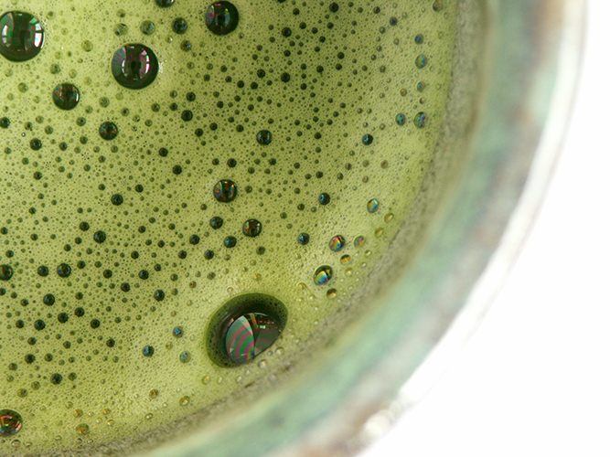

Jeju Malcha
korejská matcha
Typ: matcha
Druh: Zelený čaj
Původ
Země původu: Jižní Korea
Oblast původu: Jeju [Čedžu]
Pěstování
Strom
Druh stromu:
Věk stromu:
Výroba
Sklizeň: 1. sklizen
Fermentace:
Oxidace:
Příprava Čaje
Množství: 8g
Voda
Množství: 2dcl
Teplota: 60°C
Nalevy
vsechny nalevy 20 .
Nádobí
Materiál: Porcelan
Kalíšek
Průměr: 15cm
Hloubka: 8cm
Objem:
Konvička
Objem:
VRÁTIT SE